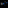

<style data-chapter-css>
.chapter-accent {
  border-left: 12px solid var(--primary);
}
</style>

<section class="slide slide--cover chapter-accent" id="p01">
  <div>
    <p class="eyebrow">Offline deck</p>
    <h1 class="display">One editable file</h1>
    <p>Local text, styles, and assets stay together.</p>
  </div>
  <aside class="speaker-notes">This note must never reach the built HTML.</aside>
</section>

<section class="slide slide--image" id="p02">
  
  <p>Embedded local image</p>
</section>
